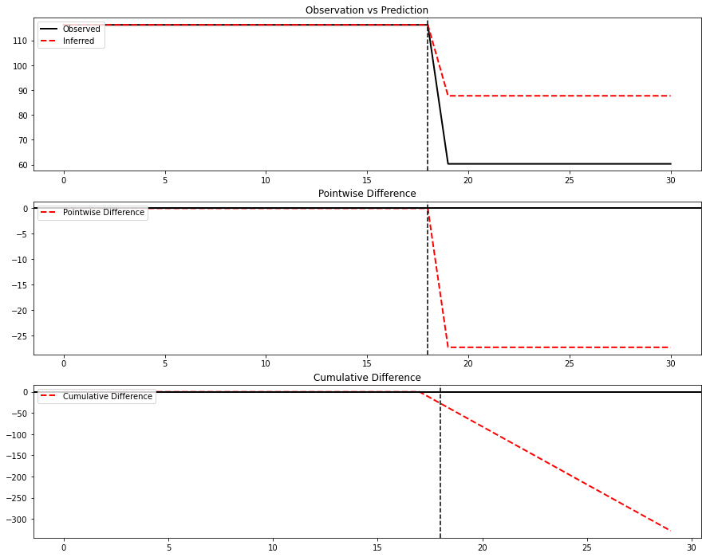
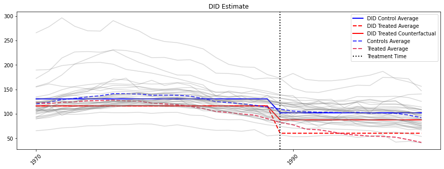
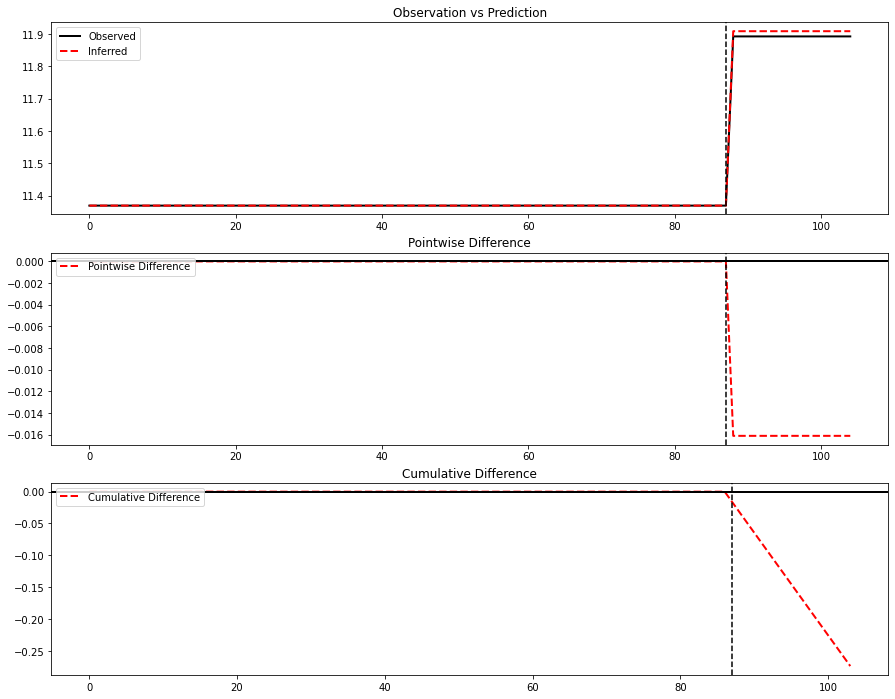
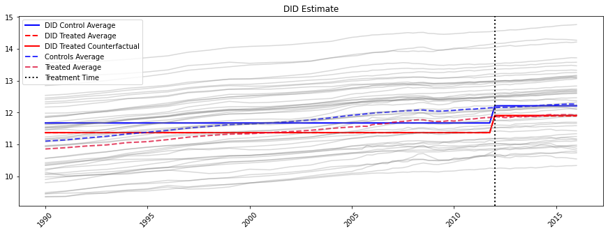
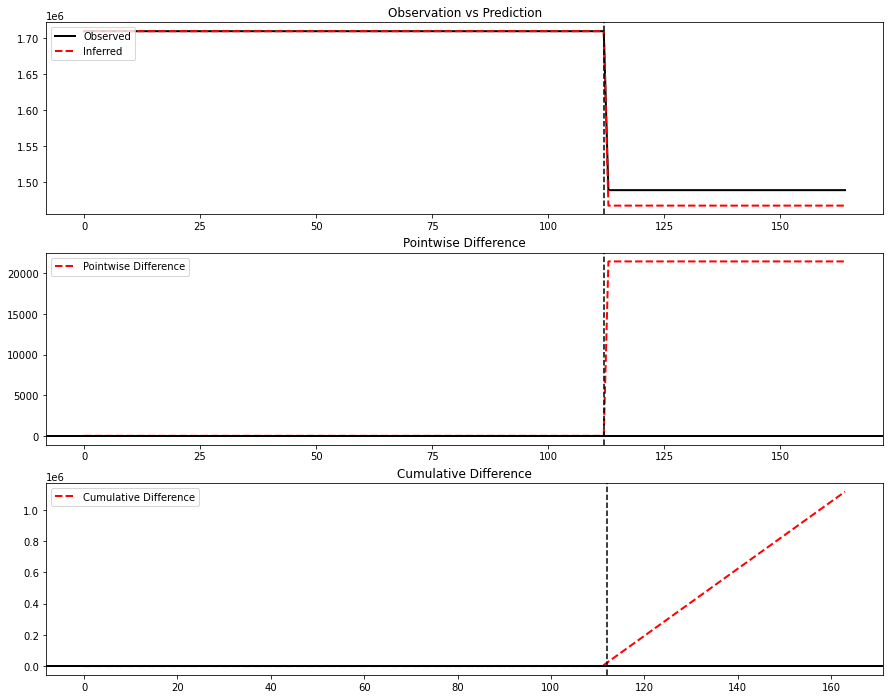
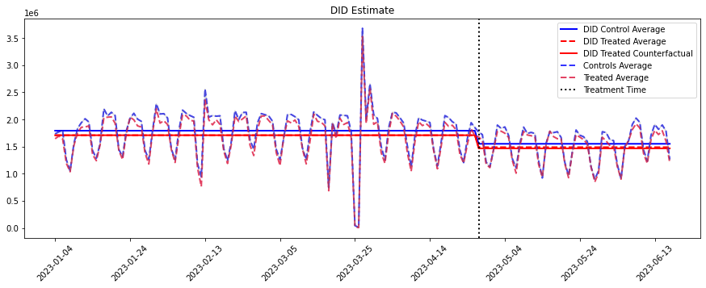
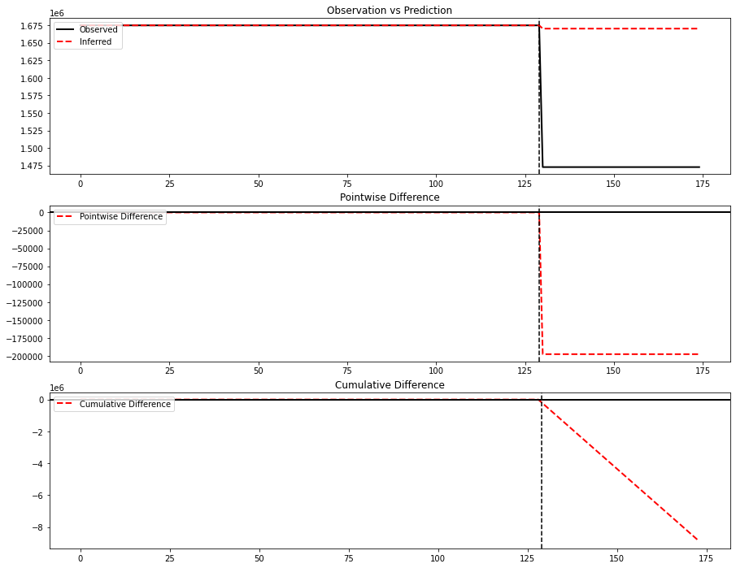
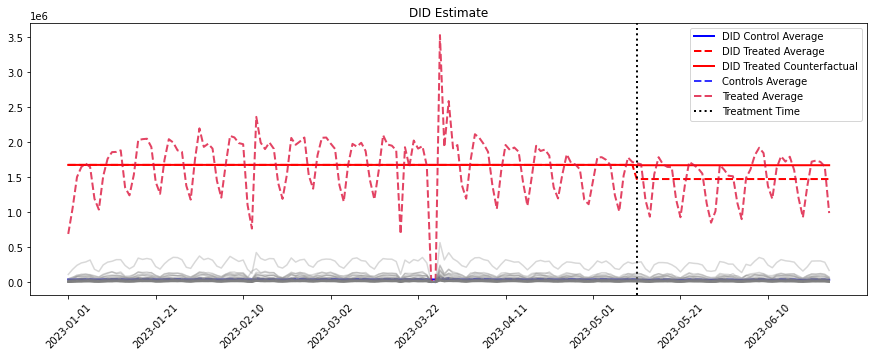

Diff-In-Diff
Difference in Difference is a quasi-experimental design that makes use of longitudinal data from treatment and control groups to obtain an appropriate counterfactual to estimate a causal effect.
Assumptions
Treatment/intervention and control groups have Parallel Trends in outcome during pre-treatment period. This is often confirmed via visual inspection.
Intervention unrelated to outcome at baseline (allocation of intervention was not determined by outcome)
Composition of intervention and comparison groups is stable for repeated cross-sectional design (part of SUTVA)
No spillover effects (part of SUTVA)
SUTVA = Staple Unit Treatment Values. Simply put this means that units receiving treatment are only responding to its treatment, not the random assignment of others.
In GeoX, this is assumed, but say if we target Geo’s at the zip code level, you could argue that folks are traveling between zip codes and would violate this assumption.
Notes on implementation
Our implementation requires a simultaneous adoptions i.e. treatment start at same time for all treated units.
Resources
[1]:
import sys
sys.path.insert(0, '../../')
[2]:
import panel_exp
[3]:
import scipy.stats as st
from dataclasses import dataclass
from matplotlib import pyplot as plt
from typing import Dict, Optional
from abc import (
ABC,
abstractmethod,
)
from __future__ import annotations
from panel_exp.methods.tbr import TBR
from panel_exp.methods.scm import SyntheticControl, AugSynth
from panel_exp.inference.unit_jackknife import unit_jk
import statsmodels.formula.api as smf
[5]:
import numpy as np
import pandas as pd
from panel_exp.panel_data import long_df_to_paneldataset
from panel_exp.methods.DID import DID
California Smoking Dataset
[6]:
long_df = pd.read_csv('../data/smoking.csv')
[7]:
long_df
[7]:
| Unnamed: 0 | state | year | cigsale | lnincome | beer | age15to24 | retprice | |
|---|---|---|---|---|---|---|---|---|
| 0 | 1 | Rhode Island | 1970 | 123.900002 | NaN | NaN | 0.183158 | 39.299999 |
| 1 | 2 | Tennessee | 1970 | 99.800003 | NaN | NaN | 0.178044 | 39.900002 |
| 2 | 3 | Indiana | 1970 | 134.600006 | NaN | NaN | 0.176516 | 30.600000 |
| 3 | 4 | Nevada | 1970 | 189.500000 | NaN | NaN | 0.161554 | 38.900002 |
| 4 | 5 | Louisiana | 1970 | 115.900002 | NaN | NaN | 0.185185 | 34.299999 |
| ... | ... | ... | ... | ... | ... | ... | ... | ... |
| 1204 | 1205 | New Mexico | 2000 | 53.799999 | NaN | NaN | NaN | 279.799988 |
| 1205 | 1206 | Connecticut | 2000 | 71.400002 | NaN | NaN | NaN | 312.299988 |
| 1206 | 1207 | Vermont | 2000 | 88.900002 | NaN | NaN | NaN | 301.100006 |
| 1207 | 1208 | Ohio | 2000 | 99.900002 | NaN | NaN | NaN | 265.399994 |
| 1208 | 1209 | Rhode Island | 2000 | 83.099998 | NaN | NaN | NaN | 322.899994 |
1209 rows × 8 columns
[8]:
long_df.columns = ['unnamed', 'unit', 'time_unit', 'y', 'lnincome','beer','age15to24','retprice']
[9]:
panel_data = long_df_to_paneldataset(long_df, "time_unit", "unit", "y", ["California"], 1989)
[10]:
panel_data.long_data
[10]:
| unit | time_unit | value | |
|---|---|---|---|
| 0 | Alabama | 1970 | 89.800003 |
| 1 | Arkansas | 1970 | 100.300003 |
| 2 | California | 1970 | 123.000000 |
| 3 | Colorado | 1970 | 124.800003 |
| 4 | Connecticut | 1970 | 120.000000 |
| ... | ... | ... | ... |
| 1204 | Vermont | 2000 | 88.900002 |
| 1205 | Virginia | 2000 | 96.699997 |
| 1206 | West Virginia | 2000 | 107.900002 |
| 1207 | Wisconsin | 2000 | 80.099998 |
| 1208 | Wyoming | 2000 | 90.500000 |
1209 rows × 3 columns
[11]:
print(panel_data.summarize())
Panel Dataset Summary
---------------------
Number of time points: 31
Number of units: 39
Number of treated units: 1
Treated units: ['California']
Treated periods: [TimePeriod(start=1989, end=None)]
[12]:
did = DID()
[13]:
did.run_analysis(panel_data)
[14]:
did.plot()

[15]:
did.summary()
[15]:
| Average | Cumulative | |
|---|---|---|
| Actual | 60.35 | 724.200001 |
| Predicted | 87.699111 | 1052.389334 |
| Absolute Effect | -27.349111 | -328.189333 |
| Relative Effect | -31.185163 | -31.185163 |
[16]:
did.plot_2()

Access P-Value
To get a p-value for DID, you can access the model summary, such as below, the post_treated_cross gives you both the ATT and the associated p-value along with other model summary information.
[17]:
did.model.summary()
[17]:
| Dep. Variable: | value | R-squared: | 0.207 |
|---|---|---|---|
| Model: | OLS | Adj. R-squared: | 0.205 |
| Method: | Least Squares | F-statistic: | 105.1 |
| Date: | Fri, 10 Nov 2023 | Prob (F-statistic): | 1.99e-60 |
| Time: | 09:48:53 | Log-Likelihood: | -5793.3 |
| No. Observations: | 1209 | AIC: | 1.159e+04 |
| Df Residuals: | 1205 | BIC: | 1.161e+04 |
| Df Model: | 3 | ||
| Covariance Type: | nonrobust |
| coef | std err | t | P>|t| | [0.025 | 0.975] | |
|---|---|---|---|---|---|---|
| Intercept | 130.5695 | 1.087 | 120.112 | 0.000 | 128.437 | 132.702 |
| treated | -14.3590 | 6.789 | -2.115 | 0.035 | -27.678 | -1.040 |
| post_treated | -28.5114 | 1.747 | -16.318 | 0.000 | -31.939 | -25.084 |
| post_treated_cross | -27.3491 | 10.911 | -2.506 | 0.012 | -48.756 | -5.942 |
| Omnibus: | 470.050 | Durbin-Watson: | 2.094 |
|---|---|---|---|
| Prob(Omnibus): | 0.000 | Jarque-Bera (JB): | 2334.004 |
| Skew: | 1.760 | Prob(JB): | 0.00 |
| Kurtosis: | 8.826 | Cond. No. | 15.4 |
Notes:
[1] Standard Errors assume that the covariance matrix of the errors is correctly specified.
Kansas Datasest
[18]:
long_df = pd.read_csv('../data/kansas_parsed.csv')
long_df.head()
[18]:
| Unnamed: 0 | lngdp | treated | fips | year_qtr | state | |
|---|---|---|---|---|---|---|
| 0 | 1 | 11.178990 | 0 | 1 | 1990.00 | Alabama |
| 1 | 2 | 11.194348 | 0 | 1 | 1990.25 | Alabama |
| 2 | 3 | 11.209473 | 0 | 1 | 1990.50 | Alabama |
| 3 | 4 | 11.224373 | 0 | 1 | 1990.75 | Alabama |
| 4 | 5 | 11.239054 | 0 | 1 | 1991.00 | Alabama |
[19]:
long_df.columns = ['un', 'value', 'treated', 'fips', 'time_unit', 'unit']
[20]:
panel_data = long_df_to_paneldataset(long_df, "time_unit", "unit", "value", ["Kansas"], 2012)
[21]:
panel_data.num_timepoints
[21]:
105
[22]:
print(panel_data.summarize())
Panel Dataset Summary
---------------------
Number of time points: 105
Number of units: 50
Number of treated units: 1
Treated units: ['Kansas']
Treated periods: [TimePeriod(start=2012, end=None)]
[23]:
did = DID()
did.run_analysis(panel_data)
did.plot()

[24]:
did.plot_2()

[25]:
did.summary()
[25]:
| Average | Cumulative | |
|---|---|---|
| Actual | 11.892406 | 202.170901 |
| Predicted | 11.908524 | 202.444911 |
| Absolute Effect | -0.016118 | -0.274011 |
| Relative Effect | -0.135351 | -0.135351 |
Adobe Dataset
[26]:
from panel_exp import panel_data
data = pd.read_csv('../data/ps_up.csv')[95:-8]
[27]:
# make wide. Pre-Aggregate.
data.index = data['date_date']
del data['date_date']
wide = data.T
[28]:
treated_times = wide.columns[-52:-1]
treated_times = panel_data.TimePeriod(start=treated_times[0], end=treated_times[-1])
treated_units = ['test']
panel_d = panel_data.PanelDataset(wide, treated_times, treated_units)
[29]:
panel_d.long_data.columns = ['unit', 'time_unit', 'value']
[30]:
panel_d.long_data.columns
[30]:
Index(['unit', 'time_unit', 'value'], dtype='object')
[31]:
print(panel_d.summarize())
Panel Dataset Summary
---------------------
Number of time points: 165
Number of units: 2
Number of treated units: 1
Treated units: ['test']
Treated periods: [TimePeriod(start='2023-04-27', end='2023-06-16')]
[32]:
did = DID()
did.run_analysis(panel_d)
did.plot()

[33]:
did.summary()
[33]:
| Average | Cumulative | |
|---|---|---|
| Actual | 1489380.062725 | 77447763.2617 |
| Predicted | 1467917.81038 | 76331726.139771 |
| Absolute Effect | 21462.252345 | 1116037.121929 |
| Relative Effect | 1.462088 | 1.462088 |
[34]:
did.plot_2()

Adobe Dataset 2
[35]:
data = pd.read_csv('../data/ps_hu_exp.csv')
[36]:
# drop unused
data = data[data.trt_unit!=-1]
# make wide. Pre-Aggregate.
data.index = data['date_date']
del data['date_date']
wide = pd.pivot_table(data, columns='date_date', index='trt_unit', values='sales', aggfunc=sum, fill_value=0)
wide=wide[wide.columns[:-1]]
wide.head()
[36]:
| date_date | 2023-01-01 | 2023-01-02 | 2023-01-03 | 2023-01-04 | 2023-01-05 | 2023-01-06 | 2023-01-07 | 2023-01-08 | 2023-01-09 | 2023-01-10 | ... | 2023-06-15 | 2023-06-16 | 2023-06-17 | 2023-06-18 | 2023-06-19 | 2023-06-20 | 2023-06-21 | 2023-06-22 | 2023-06-23 | 2023-06-24 |
|---|---|---|---|---|---|---|---|---|---|---|---|---|---|---|---|---|---|---|---|---|---|
| trt_unit | |||||||||||||||||||||
| 1 | 688700.6639 | 1.058459e+06 | 1.501193e+06 | 1.645304e+06 | 1.693825e+06 | 1.644977e+06 | 1.190596e+06 | 1.037025e+06 | 1.516395e+06 | 1.762020e+06 | ... | 1.791547e+06 | 1.600702e+06 | 1.202196e+06 | 925243.34590 | 1.370515e+06 | 1.721346e+06 | 1.736914e+06 | 1.717797e+06 | 1.653807e+06 | 987202.27730 |
| 500 | 3849.0700 | 6.236520e+03 | 7.088760e+03 | 8.623270e+03 | 9.218040e+03 | 9.287670e+03 | 7.898040e+03 | 8.513910e+03 | 1.214023e+04 | 1.168506e+04 | ... | 1.067967e+04 | 1.147771e+04 | 5.703110e+03 | 6371.23000 | 6.208890e+03 | 8.875560e+03 | 1.286271e+04 | 7.724400e+03 | 1.051731e+04 | 4503.96000 |
| 501 | 109996.0066 | 1.828160e+05 | 2.410301e+05 | 2.749902e+05 | 2.889643e+05 | 3.168295e+05 | 1.842204e+05 | 1.521014e+05 | 2.465144e+05 | 2.860200e+05 | ... | 2.985433e+05 | 2.865574e+05 | 2.165892e+05 | 159011.31210 | 2.194017e+05 | 3.009233e+05 | 3.032306e+05 | 3.036898e+05 | 2.843343e+05 | 167571.88340 |
| 505 | 19862.0400 | 2.583488e+04 | 4.672311e+04 | 4.252209e+04 | 3.995638e+04 | 4.285677e+04 | 3.009847e+04 | 2.989465e+04 | 4.327186e+04 | 5.457588e+04 | ... | 3.819375e+04 | 4.000970e+04 | 3.021208e+04 | 15788.15018 | 3.792892e+04 | 4.679647e+04 | 5.494358e+04 | 3.855805e+04 | 4.471367e+04 | 30681.27000 |
| 506 | 32179.1100 | 4.626169e+04 | 7.605868e+04 | 7.829410e+04 | 8.618459e+04 | 7.983541e+04 | 6.101569e+04 | 5.037411e+04 | 7.110840e+04 | 8.403398e+04 | ... | 9.606729e+04 | 8.687347e+04 | 6.177899e+04 | 38276.77843 | 5.733149e+04 | 7.760033e+04 | 8.125188e+04 | 8.652704e+04 | 7.941183e+04 | 50530.50578 |
5 rows × 175 columns
[37]:
treated_times = wide.columns[-45:-7]
treated_times = panel_data.TimePeriod(start=treated_times[0], end=treated_times[-1])
treated_units = [1]
pand = panel_data.PanelDataset(wide, treated_times, treated_units)
[38]:
print(pand.summarize())
Panel Dataset Summary
---------------------
Number of time points: 175
Number of units: 39
Number of treated units: 1
Treated units: [1]
Treated periods: [TimePeriod(start='2023-05-11', end='2023-06-17')]
[39]:
did = DID()
did.run_analysis(pand)
did.plot()

[40]:
did.summary()
[40]:
| Average | Cumulative | |
|---|---|---|
| Actual | 1472837.576264 | 66277690.931893 |
| Predicted | 1670303.882979 | 75163674.734037 |
| Absolute Effect | -197466.306714 | -8885983.802145 |
| Relative Effect | -11.822179 | -11.822179 |
[41]:
did.plot_2()

[42]:
#* This returns bad results because the treated units have been summed and control has been left de-aggregated.
[ ]: